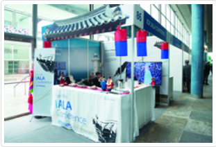
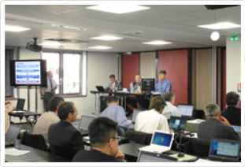

항로표지 국제활동
항로표지 국제활동
- 우리 기술원은 IALA(국제항로표지협회)의 기관회원으로 IALA기술위원회 및 주요회의에 적극 참여하고 각종 IALA전문가 그룹활동을 지원하며 획득한 기술과 정보를 국내 관련기관에 전파하고 공유하면서 국제적인 대응의제를 개발·연구하는데 앞장서 왔습니다.
- 우리나라는 2018년 IALA 총회 개최국입니다. 이를계기로 우리 기술원은 앞으로 IALA활동을 더욱 강화하여 국제해사사회에서 우리나라의 위상을 제고하는데 일조할 계획입니다.
- 우리 기술원은 국제협력 사업 마스터 플랜을 수립하고, 개도국을 대상으로 교육연수 및 기술이전과 함께 항로표지 인프라 구축사업을 다방면으로 지원하고 있습니다.

